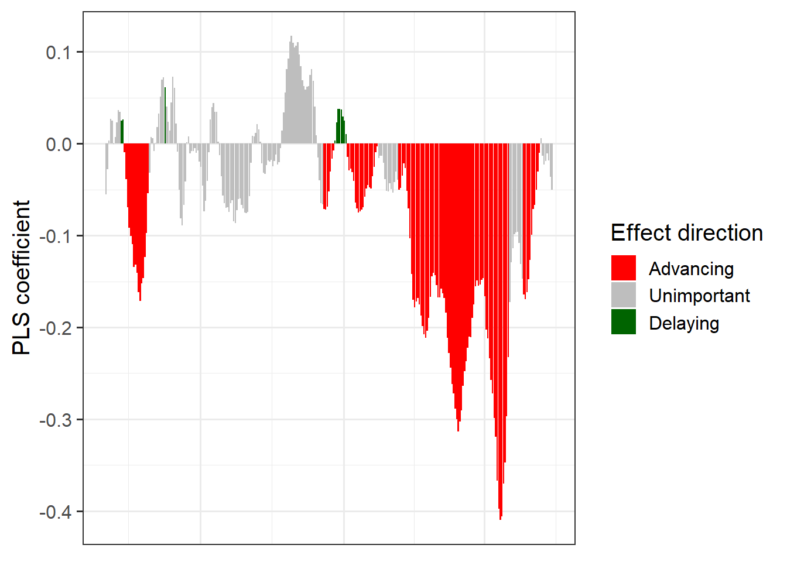
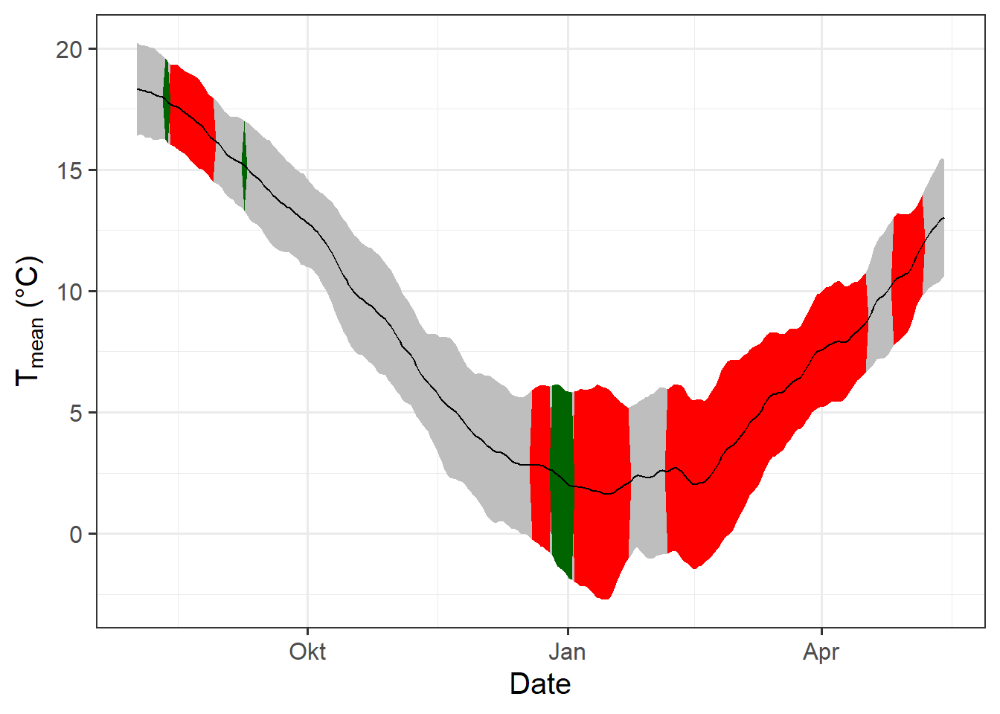
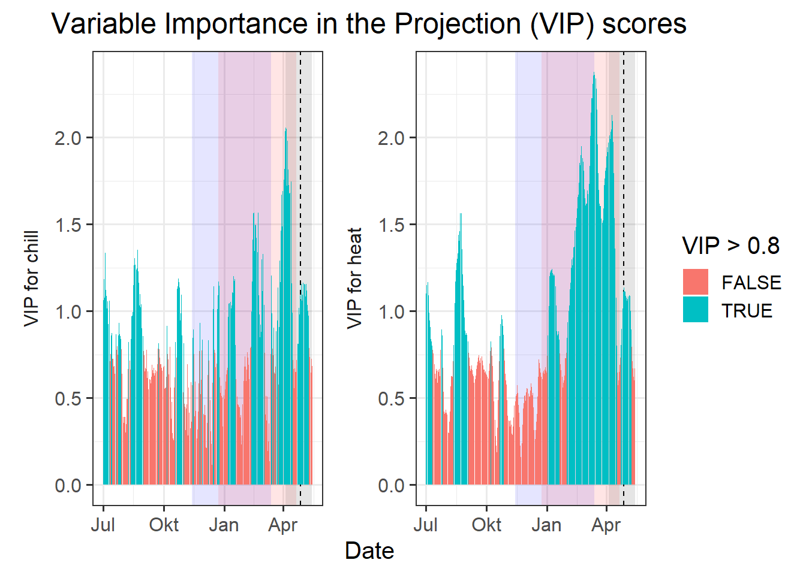
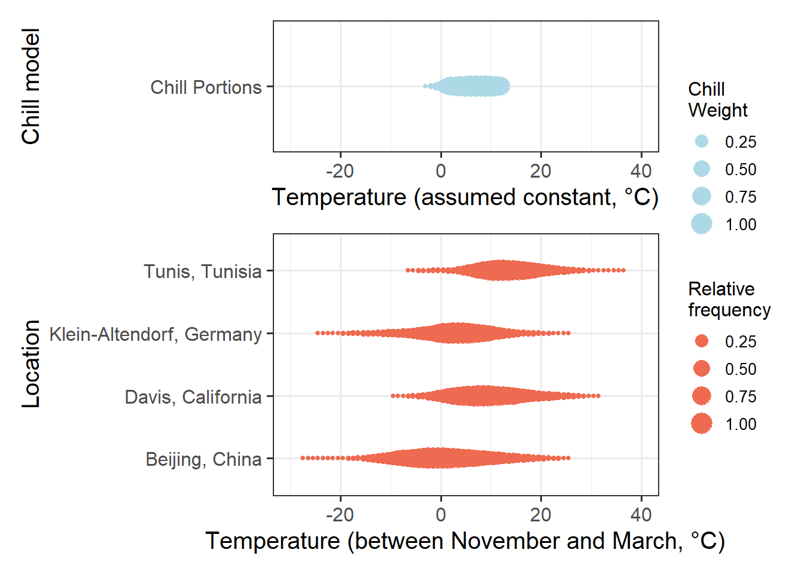
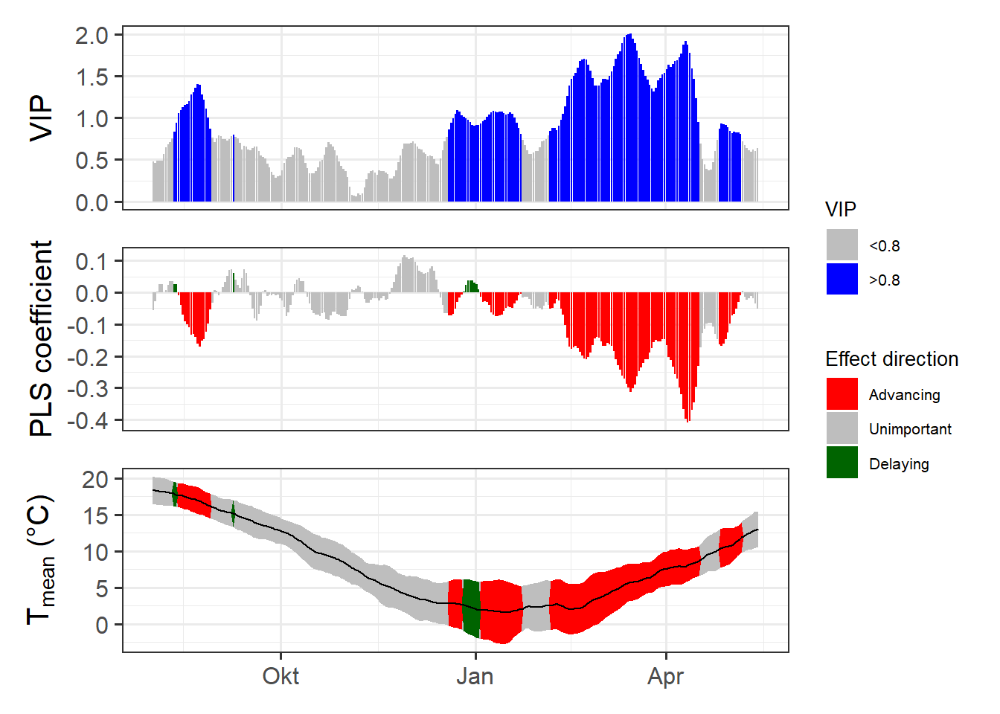

Chapter 20 PLS regression with agroclimatic metrics
1. Repeat the PLS_chill_force procedure for the ‘Roter Boskoop’ dataset. Include plots of daily chill and heat accumulation.
library(chillR)
library(kableExtra)
temps<-read_tab("data/TMaxTMin1958-2019_patched.csv")
temps_hourly<-stack_hourly_temps(temps,latitude=50.6)
kable(head(temps)) %>%
kable_styling("striped", position = "left",font_size = 8)| DATE | YEARMODA | Year | Month | Day | Tmin | Tmax | Tmin_source | Tmax_source | no_Tmin | no_Tmax |
|---|---|---|---|---|---|---|---|---|---|---|
| 01-01-58 | 19580101 | 1958 | 1 | 1 | 5.0 | 7.50 | NA | NA | FALSE | FALSE |
| 02-01-58 | 19580102 | 1958 | 1 | 2 | 1.5 | 9.00 | NA | NA | FALSE | FALSE |
| 03-01-58 | 19580103 | 1958 | 1 | 3 | -5.5 | 1.10 | NA | NA | FALSE | FALSE |
| 04-01-58 | 19580104 | 1958 | 1 | 4 | -5.5 | 0.50 | NA | NA | FALSE | FALSE |
| 05-01-58 | 19580105 | 1958 | 1 | 5 | 3.5 | 2.75 | NA | NA | FALSE | TRUE |
| 06-01-58 | 19580106 | 1958 | 1 | 6 | 3.0 | 5.00 | NA | NA | FALSE | FALSE |
daychill<-daily_chill(hourtemps=temps_hourly,
running_mean=1,
models = list(Chilling_Hours = Chilling_Hours, Utah_Chill_Units = Utah_Model,
Chill_Portions = Dynamic_Model, GDH = GDH))
Boskoop<-read_tab("data/Roter_Boskoop_bloom_1958_2019.csv")
Boskoop_first<-Boskoop[,1:2]
Boskoop_first[,"Year"]<-substr(Boskoop_first$First_bloom,1,4)
Boskoop_first[,"Month"]<-substr(Boskoop_first$First_bloom,5,6)
Boskoop_first[,"Day"]<-substr(Boskoop_first$First_bloom,7,8)
Boskoop_first<-make_JDay(Boskoop_first)
Boskoop_first<-Boskoop_first[,c("Pheno_year","JDay")]
colnames(Boskoop_first)<-c("Year","pheno")
plscf<-PLS_chill_force(daily_chill_obj=daychill,
bio_data_frame=Boskoop_first,
split_month=6,
chill_models = "Chill_Portions",
heat_models = "GDH",
runn_means = 11)
kable(head(plscf$Chill_Portions$GDH$PLS_summary)) %>%
kable_styling("striped", position = "left",font_size = 10)| Date | Type | JDay | Coef | VIP | MetricMean | MetricStdev |
|---|---|---|---|---|---|---|
| 701 | Chill | -183 | 0.1137146 | 1.061441 | 0.0559804 | 0.0965426 |
| 702 | Chill | -182 | 0.1330927 | 1.182803 | 0.0563105 | 0.0997921 |
| 703 | Chill | -181 | 0.1127799 | 1.077426 | 0.0532572 | 0.0956684 |
| 704 | Chill | -180 | 0.1739338 | 1.333523 | 0.0486906 | 0.0866341 |
| 705 | Chill | -179 | 0.0967065 | 1.121475 | 0.0425852 | 0.0815729 |
| 706 | Chill | -178 | 0.0696730 | 1.085244 | 0.0397766 | 0.0802201 |
PLS_gg<-plscf$Chill_Portions$GDH$PLS_summary
PLS_gg[,"Month"]<-trunc(PLS_gg$Date/100)
PLS_gg[,"Day"]<-PLS_gg$Date-PLS_gg$Month*100
PLS_gg[,"Date"]<-ISOdate(2002,PLS_gg$Month,PLS_gg$Day)
PLS_gg[which(PLS_gg$JDay<=0),"Date"]<-
ISOdate(2001,
PLS_gg$Month[which(PLS_gg$JDay<=0)],
PLS_gg$Day[which(PLS_gg$JDay<=0)])
PLS_gg[,"VIP_importance"]<-PLS_gg$VIP>=0.8
PLS_gg[,"VIP_Coeff"]<-factor(sign(PLS_gg$Coef)*PLS_gg$VIP_importance)
chill_start_JDay<--48 #!!!!!!!!!!!!!!!!!!!!!!!!!!!!!!!!!!!!!!!!!!!!!!!!!!!!!!!!!!!!!
chill_end_JDay<-72
heat_start_JDay<--8
heat_end_JDay<-110
chill_start_date<-ISOdate(2001,12,31)+chill_start_JDay*24*3600
chill_end_date<-ISOdate(2001,12,31)+chill_end_JDay*24*3600
heat_start_date<-ISOdate(2001,12,31)+heat_start_JDay*24*3600
heat_end_date<-ISOdate(2001,12,31)+heat_end_JDay*24*3600library(ggplot2)
temp_plot<- ggplot(PLS_gg,x=Date) +
annotate("rect",
xmin = chill_start_date,
xmax = chill_end_date,
ymin = -Inf,
ymax = Inf,
alpha = .1,fill = "blue") +
annotate("rect",
xmin = heat_start_date,
xmax = heat_end_date,
ymin = -Inf,
ymax = Inf,
alpha = .1,fill = "red") +
annotate("rect",
xmin = ISOdate(2001,12,31) +
min(plscf$pheno$pheno,na.rm=TRUE)*24*3600,
xmax = ISOdate(2001,12,31) +
max(plscf$pheno$pheno,na.rm=TRUE)*24*3600,
ymin = -Inf,
ymax = Inf,
alpha = .1,fill = "black") +
geom_vline(xintercept = ISOdate(2001,12,31) +
median(plscf$pheno$pheno,na.rm=TRUE)*24*3600,
linetype = "dashed") +
geom_ribbon(aes(x=Date,
ymin=MetricMean - MetricStdev ,
ymax=MetricMean + MetricStdev ),
fill="grey") +
geom_ribbon(aes(x=Date,
ymin=MetricMean - MetricStdev * (VIP_Coeff==-1),
ymax=MetricMean + MetricStdev * (VIP_Coeff==-1)),
fill="red") +
geom_ribbon(aes(x=Date,
ymin=MetricMean - MetricStdev * (VIP_Coeff==1),
ymax=MetricMean + MetricStdev * (VIP_Coeff==1)),
fill="dark green") +
geom_line(aes(x=Date,y=MetricMean ))
temp_plot
temp_plot<- temp_plot +
facet_wrap(vars(Type), scales = "free_y",
strip.position="left",
labeller = labeller(Type = as_labeller(
c(Chill="Chill (CP)",Heat="Heat (GDH)")))) +
ggtitle("Daily chill and heat accumulation rates") +
theme_bw(base_size=15) +
theme(strip.background = element_blank(),
strip.placement = "outside",
strip.text.y = element_text(size =12),
plot.title = element_text(hjust = 0.5),
axis.title.y=element_blank()
)
temp_plot
VIP_plot<- ggplot(PLS_gg,aes(x=Date,y=VIP)) +
annotate("rect",
xmin = chill_start_date,
xmax = chill_end_date,
ymin = -Inf,
ymax = Inf,
alpha = .1,fill = "blue") +
annotate("rect",
xmin = heat_start_date,
xmax = heat_end_date,
ymin = -Inf,
ymax = Inf,
alpha = .1,fill = "red") +
annotate("rect",
xmin = ISOdate(2001,12,31) +
min(plscf$pheno$pheno,na.rm=TRUE)*24*3600,
xmax = ISOdate(2001,12,31) +
max(plscf$pheno$pheno,na.rm=TRUE)*24*3600,
ymin = -Inf,
ymax = Inf,
alpha = .1,fill = "black") +
geom_vline(xintercept = ISOdate(2001,12,31) +
median(plscf$pheno$pheno,na.rm=TRUE)*24*3600,
linetype = "dashed") +
geom_bar(stat='identity',aes(fill=VIP>0.8))
VIP_plot
VIP_plot <- VIP_plot + facet_wrap(vars(Type), scales="free",
strip.position="left",
labeller = labeller(Type = as_labeller(
c(Chill="VIP for chill",Heat="VIP for heat")))) +
scale_y_continuous(
limits=c(0,max(plscf$Chill_Portions$GDH$PLS_summary$VIP))) +
ggtitle("Variable Importance in the Projection (VIP) scores") +
theme_bw(base_size=15) +
theme(strip.background = element_blank(),
strip.placement = "outside",
strip.text.y = element_text(size =12),
plot.title = element_text(hjust = 0.5),
axis.title.y=element_blank()
)
VIP_plot
VIP_plot <- VIP_plot +
scale_fill_manual(name="VIP",
labels = c("<0.8", ">0.8"),
values = c("FALSE"="grey", "TRUE"="blue")) +
theme(axis.text.x = element_blank(),
axis.ticks.x = element_blank(),
axis.title.x = element_blank(),
axis.title.y = element_blank())
VIP_plot
coeff_plot<- ggplot(PLS_gg,aes(x=Date,y=Coef)) +
annotate("rect",
xmin = chill_start_date,
xmax = chill_end_date,
ymin = -Inf,
ymax = Inf,
alpha = .1,fill = "blue") +
annotate("rect",
xmin = heat_start_date,
xmax = heat_end_date,
ymin = -Inf,
ymax = Inf,
alpha = .1,fill = "red") +
annotate("rect",
xmin = ISOdate(2001,12,31) +
min(plscf$pheno$pheno,na.rm=TRUE)*24*3600,
xmax = ISOdate(2001,12,31) +
max(plscf$pheno$pheno,na.rm=TRUE)*24*3600,
ymin = -Inf,
ymax = Inf,
alpha = .1,fill = "black") +
geom_vline(xintercept = ISOdate(2001,12,31) +
median(plscf$pheno$pheno,na.rm=TRUE)*24*3600,
linetype = "dashed") +
geom_bar(stat='identity',aes(fill=VIP_Coeff))
coeff_plot
coeff_plot <- coeff_plot + facet_wrap(vars(Type), scales="free",
strip.position="left",
labeller = labeller(
Type = as_labeller(
c(Chill="MC for chill",Heat="MC for heat")))) +
scale_y_continuous(
limits=c(min(plscf$Chill_Portions$GDH$PLS_summary$Coef),
max(plscf$Chill_Portions$GDH$PLS_summary$Coef))) +
ggtitle("Model coefficients (MC)") +
theme_bw(base_size=15) +
theme(strip.background = element_blank(),
strip.placement = "outside",
strip.text.y = element_text(size =12),
plot.title = element_text(hjust = 0.5),
axis.title.y=element_blank()
)
coeff_plot 
coeff_plot <- coeff_plot + facet_wrap(vars(Type), scales="free",
strip.position="left",
labeller = labeller(
Type = as_labeller(
c(Chill="MC for chill",Heat="MC for heat")))) +
scale_y_continuous(
limits=c(min(plscf$Chill_Portions$GDH$PLS_summary$Coef),
max(plscf$Chill_Portions$GDH$PLS_summary$Coef))) +
ggtitle("Model coefficients (MC)") +
theme_bw(base_size=15) +
theme(strip.background = element_blank(),
strip.placement = "outside",
strip.text.y = element_text(size =12),
plot.title = element_text(hjust = 0.5),
axis.title.y=element_blank()
)
coeff_plot 
coeff_plot <- coeff_plot + scale_fill_manual(name="Effect direction",
labels = c("Advancing", "Unimportant","Delaying"),
values = c("-1"="red", "0"="grey","1"="dark green")) +
ylab("PLS coefficient") +
theme(axis.text.x = element_blank(),
axis.ticks.x = element_blank(),
axis.title.x = element_blank(),
axis.title.y = element_blank())
coeff_plot
library(patchwork)
plot<- (VIP_plot +
coeff_plot +
temp_plot +
plot_layout(ncol=1,
guides = "collect")
) & theme(legend.position = "right",
legend.text = element_text(size=8),
legend.title = element_text(size=10),
axis.title.x=element_blank())
plot
2. Run PLS_chill_force analyses for all three major chill models. Delineate your best estimates of chilling and forcing phases for all of them.
3. Plot results for all three analyses, including shaded plot areas for the chilling and forcing periods you estimated.